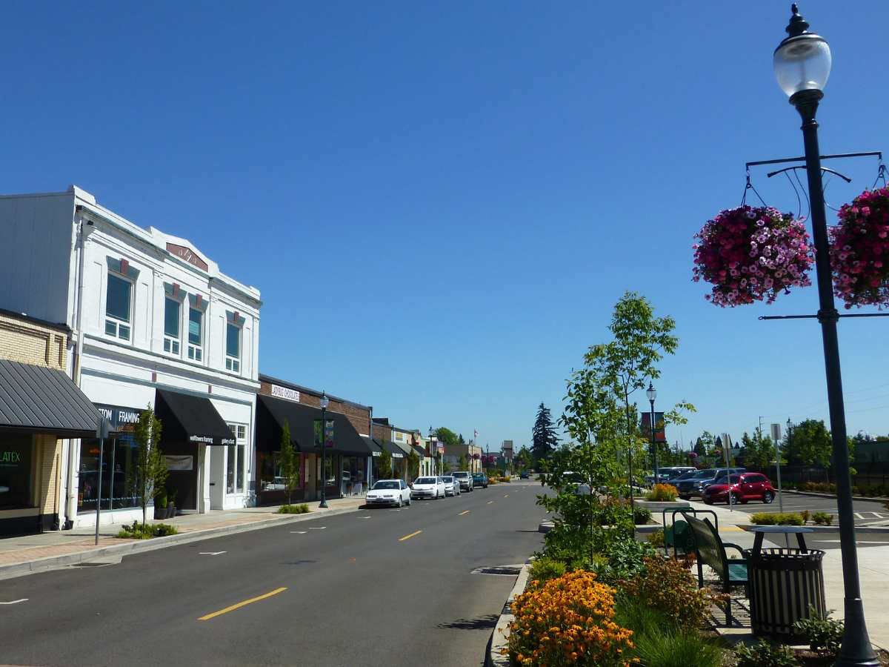
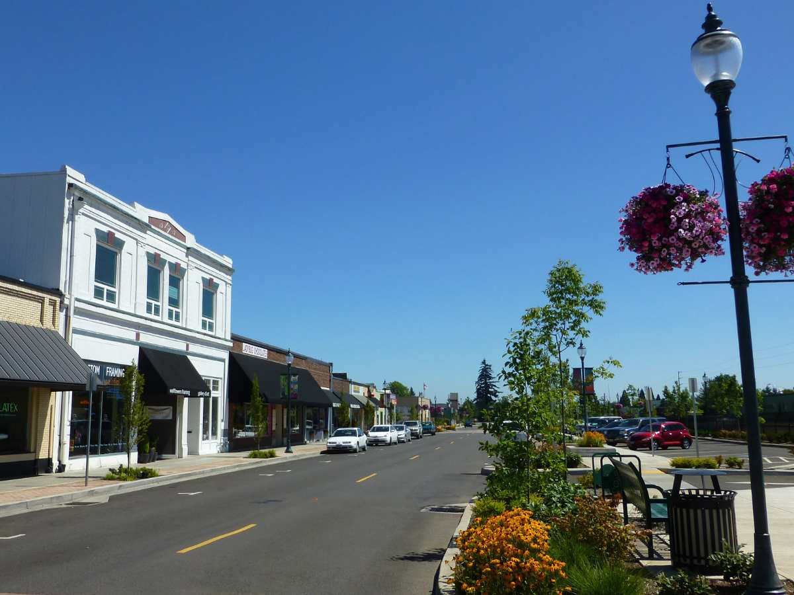

The Educational Landscape of Canby
Canby is served by the Canby School District (CSD), which enrolls approximately 4,140 students across seven schools: four elementary schools (Carus, Cecile Trost, Philander Lee, and William Knight), one middle school (Baker Prairie), one high school (Canby High), and one charter school (Ninety-One School), as of the 2024-2025 school year. CSD is known for its innovative programs, including dual-language immersion in Spanish and English at Baker Prairie Middle School, which supports the district’s 36% Hispanic student population. The district emphasizes personalized learning, with initiatives like AVID (Advancement Via Individual Determination) to prepare students for college and careers.
Canby High School, serving around 1,400 students, offers robust programs like Advanced Placement courses and CTE pathways in agriculture, business, and technology, aligning with Canby’s agricultural heritage and modern economy. According to the Oregon Department of Education’s 2024 At-A-Glance profiles, Canby High achieves a 92% on-time graduation rate, surpassing the state average of 86%. However, district-wide proficiency rates show 27% of students proficient in math and 42% in reading, compared to state averages of 31% and 44%, indicating opportunities for academic support. Baker Prairie Middle School, with 562 students, and Philander Lee Elementary, with 316 students, both rank in the bottom 50% of Oregon schools, with math proficiency at 25-29% and reading at 30-42%, highlighting the need for targeted interventions.
Canby’s private school options are limited but impactful. Schools like North Clackamas Christian School, located nearby, serve families seeking faith-based education, with small class sizes and a focus on college prep. Oregon’s private school enrollment has grown slightly, from 7% in 2019 to 7.5% in 2022, reflecting a trend toward alternative education. Canby families also benefit from proximity to private schools in Wilsonville and Oregon City, such as Victory Academy, which specializes in autism support.
Our tutoring service supports students in Canby’s public and private schools, offering customized instruction for core subjects, advanced coursework, and standardized tests like the SAT, ACT, or Oregon state assessments. Whether your child attends Canby High or a private institution, our affordable, one-on-one tutoring—available in-person or online—ensures they achieve their academic potential.


 
